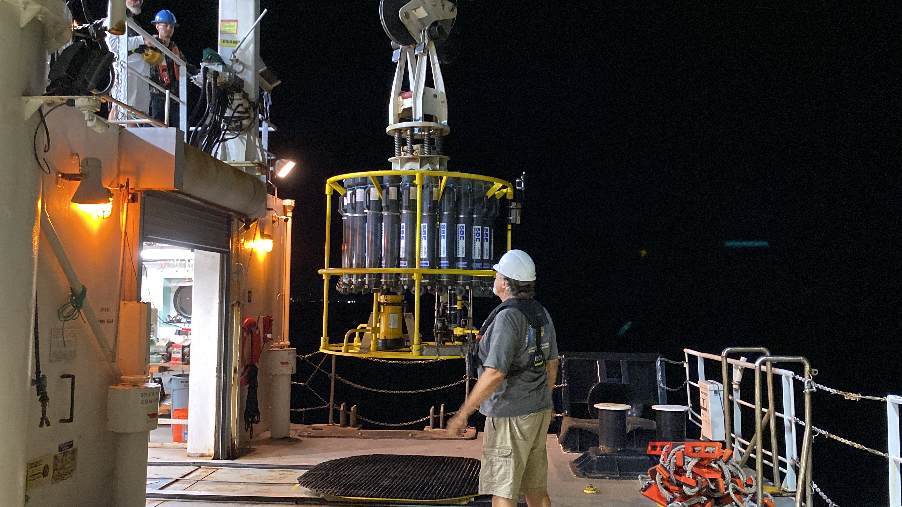
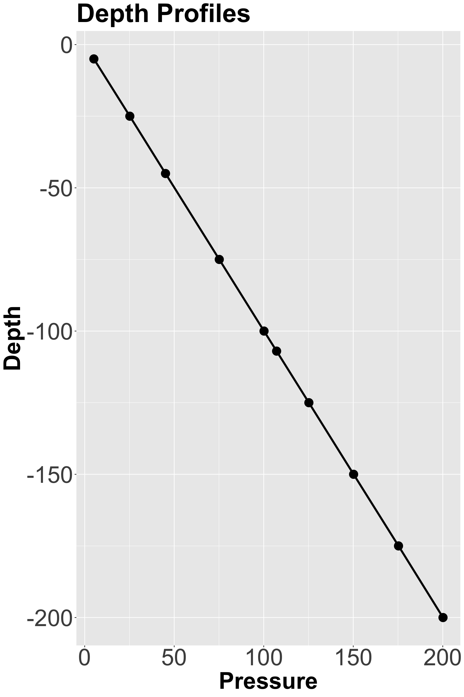
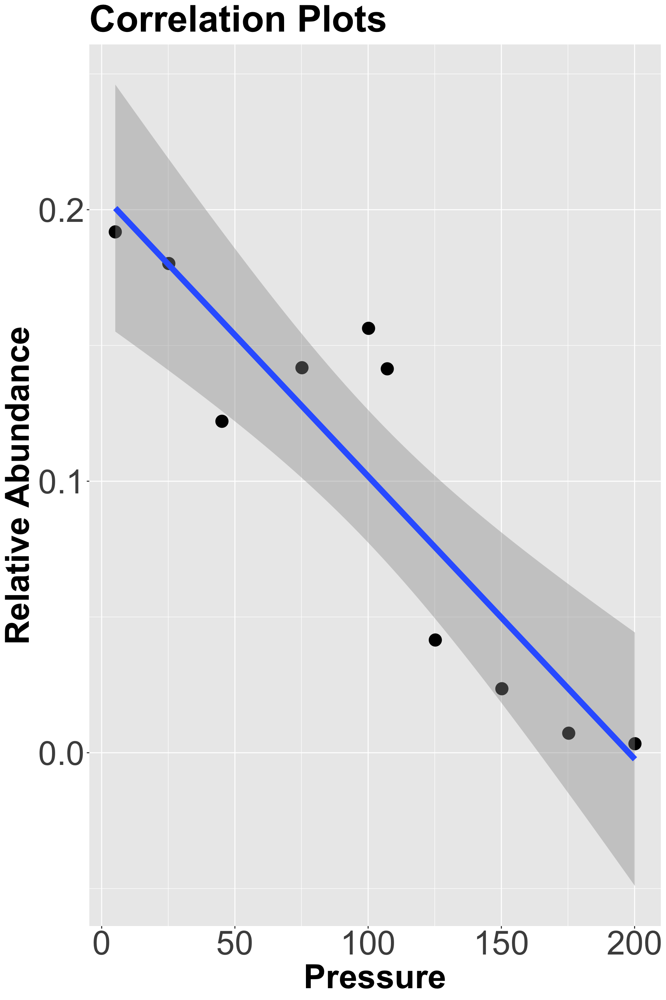
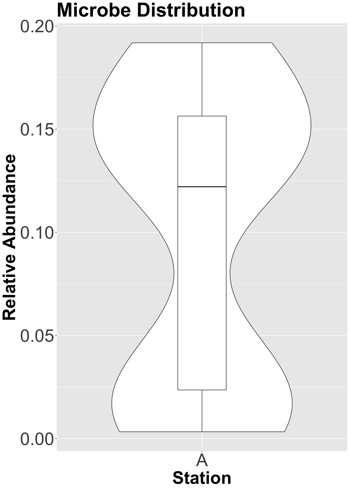

# A tibble: 10 × 27
...1 scan time_s time_j dz_dt_m pr_dm dep_sm c_star_at0 c_star_tr0 bpos
<dbl> <dbl> <dbl> <dbl> <dbl> <dbl> <dbl> <dbl> <dbl> <dbl>
1 2 1 0 267. -5.46e-16 1.10 1.10 1.03 77.3 0
2 3 2 0.042 267. 3 e- 3 1.16 1.15 1.03 77.3 0
3 4 3 0.083 267. 3 e- 3 1.10 1.10 1.03 77.3 0
4 5 4 0.125 267. 3 e- 3 1.10 1.10 1.03 77.3 0
5 6 5 0.167 267. 4 e- 3 1.13 1.12 1.03 77.3 0
6 7 6 0.208 267. 4 e- 3 1.10 1.10 1.03 77.3 0
7 8 7 0.25 267. 4 e- 3 1.10 1.10 1.03 77.3 0
8 9 8 0.292 267. 7 e- 3 1.16 1.15 1.03 77.3 0
9 10 9 0.333 267. 7 e- 3 1.10 1.10 1.03 77.3 0
10 11 10 0.375 267. 6 e- 3 1.10 1.10 1.03 77.3 0
# ℹ 17 more variables: t090c <dbl>, t190c <dbl>, c0u_s_cm <dbl>,
# c1u_s_cm <dbl>, sal00 <dbl>, sal11 <dbl>, density00 <dbl>, sigma_00 <dbl>,
# density11 <dbl>, sigma_11 <dbl>, fl_sp <dbl>, sbox0mm_kg <dbl>,
# sbeox0ps <dbl>, sbox1mm_kg <dbl>, sbeox1ps <dbl>, par <dbl>, flag <dbl>Final Presentation - Oceanographic Data
Keanu Rochette-Yu Tsuen
2024-12-01
Introduction
- Undergraduate: BS. Global Environmental Science
- Graduate: MS. Oceanography
Being in the Oceanography department, it’s almost a rite of passage to go on a research cruise (undergrad).
It’s mandatory to have ship time as graduate student.
Kilo Moana Ship
My Research Side Quest
My first Kilo Moana Cruise
Why?:
- study the Island Mass Effect
- trophic interactions between coastal fisheries
and pelagic fisheries - changes in microbial community composition
with IME - test new instrument: Hadal Profiler
- being on a research cruise have fun

Data Collection: Gathering Intel
How?:
- CTD measurements
- Conductivity / Salinity
- Temperature
- Depth and Pressure
- Oxygen
- Fluorescence
- Water sampling
- Prochlorococcus
- Synechococcus
- Heterotrophic Bacteria
- Pico Eukaryotes

Data Clean Up: a Well Kept Secret
CTD Data
- ASCII files, unable to be read as CSV
- 7 files
- Data files: 76794 x 27
Data Clean Up: a Well Kept Secret
CTD Data
asc_to_csv <- function(filename){
asc_file <- here("Oceanographic_data", "data","raw_data","ctd_data", filename)
data <- read.table(asc_file, sep = ",")
colnames(data) <- data[1,]
data <- data[-1,]
data <- clean_names(data)
filename <- str_replace_all(filename, "\\.|[a-z]{3}", "")
filename <- str_trim(filename)
write.csv(data, file = here("Oceanographic_data", "data","raw_data","ctd_data",
paste(filename, ".csv")))
}Data Clean Up: a Well Kept Secret
FCM Data
- FCM: Flow Cytometry.
- Way to count and sort cells with a laser
- Allows to differentiate different microbes
- Cyanobacteria
- Heterotrophic Bacteria
- Pico Eukaryotes
- Data file: 80 x 181
# A tibble: 10 × 181
`Tube Name:` Station Depth `Abort(%):` `Absolute Count:` `All Events`
<chr> <chr> <dbl> <dbl> <chr> <dbl>
1 02-Well-A02 A1 5 0.57 Beads Population=#### Be… 57872
2 02-Well-A03 A1 25 0.57 Beads Population=#### Be… 54364
3 02-Well-A04 A1 45 2.05 Beads Population=#### Be… 90473
4 02-Well-A05 A1 75 1.02 Beads Population=#### Be… 95353
5 02-Well-A06 A1 100 0.95 Beads Population=#### Be… 54190
6 02-Well-A07 A1 125 1.37 Beads Population=#### Be… 111759
7 02-Well-A08 A1 150 0.9 Beads Population=#### Be… 32304
8 02-Well-A09 A1 175 0.86 Beads Population=#### Be… 37717
9 02-Well-A10 A1 250 0.47 Beads Population=#### Be… 23519
10 02-Well-A11 stain -999 0.48 Beads Population=#### Be… 18833
# ℹ 175 more variables: `Include Events` <dbl>, `Low Chlorophyll Events` <dbl>,
# `Autotrophic (Hi Chl) Events` <dbl>,
# `Small Autotrophs (Cyanobacteria) Events` <dbl>,
# `Large Autotrophs (PicoEuks) Events` <dbl>, `H1-UR Events` <dbl>,
# `H1-UL Events` <dbl>, `Heterotrophic Bacteria Events` <dbl>,
# `Hoechst Junk Events` <dbl>, `LowPECyanos Events` <dbl>,
# `HighPECyanos Events` <dbl>, `Chlorophyll Junk Events` <dbl>, …Data Clean Up: a Well Kept Secret
FCM Data
fcm <- fcm %>%
mutate(real_event = include_events_i1_4l_v- hoechst_junk_events_i1_4l_v- chlorophyll_junk_events_i1_4l_v) %>%
select(1,c(166:181), -h1_ur_events_i1_4l_v, -h1_ul_events_i1_4l_v,
-h2_ll_events_i1_4l_v, -h2_lr_events_i1_4l_v,
-hoechst_junk_events_i1_4l_v, -chlorophyll_junk_events_i1_4l_v
) %>%
rename(all_events = all_events_events_i1_4l_v,
include_events = include_events_i1_4l_v,
low_chl_events = low_chlorophyll_events_i1_4l_v,
autotr= autotrophic_hi_chl_events_i1_4l_v,
small_autotr_cyano = small_autotrophs_cyanobacteria_events_i1_4l_v,
large_autotr_pico_euks = large_autotrophs_pico_euks_events_i1_4l_v,
heterobact = heterotrophic_bacteria_events_i1_4l_v,
low_pe_cyano = low_pe_cyanos_events_i1_4l_v,
hi_pe_cyano = high_pe_cyanos_events_i1_4l_v,
true_autotr = true_autotrophs_events_i1_4l_v)Data Clean Up: a Well Kept Secret
FCM Data
Data Visualization: Revealing the Hidden Story


